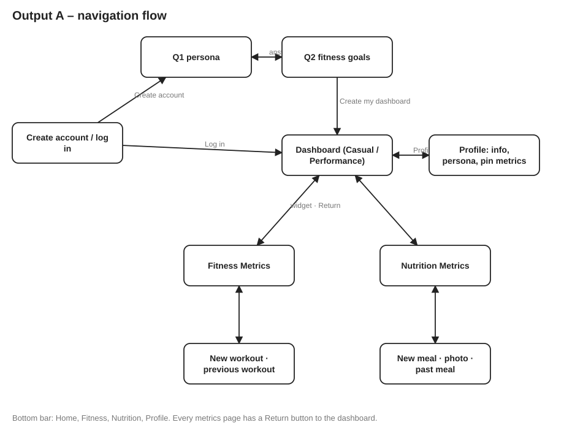

Output A – Initial design: low-fidelity wireframes
Task 2 Output A: two personas (casual user, performance athlete), calorie and workout tracking, metrics pinned from the Profile (settings), progress charts for the past week, month and year, and the "Do you want to see more data?" question. Numbered badges show where each control leads.
Navigation flow

Screens
A-L01 Create account / log inA-L02 Questionnaire 1: persona (one question per page)